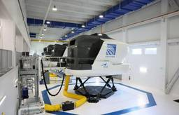
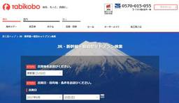
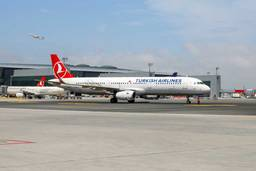
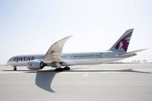
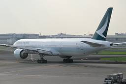

TRAICY（トライシー）
https://www.traicy.com/
TRAICY（トライシー）は、航空・LCC・鉄道・ホテル・ゲストハウス・バックパッカーズの最新情報を発信している、日本最大級のトラベルメディアです。
フィード
高速バス・福岡～宮崎線「フェニックス号」、8月31日に全便再開
TRAICY（トライシー）
西日本鉄道と宮崎交通、JR九州バス、九州産交バスは、高速バス・福岡〜宮崎線「フェニックス号」を8月31日に全便再開する。 8月24日に運休している5往復のうち2往復を再開し、18往復体制とする。8月31日には残る3往復も […]投稿 高速バス・福岡～宮崎線「フェニックス号」、8月31日に全便再開 は TRAICY（トライシー） に最初に表示されました。
2時間前

JR東日本、特急「わかしお号」「新宿わかしお号」の運転を再開
TRAICY（トライシー）
JR東日本は、特急「わかしお号」「新宿わかしお号」の運転を8月23日から再開する。 8月13日から14日にかけて発生した豪雨の影響で、外房線の誉田～大網駅間で線路設備に被害が出たことから運転を見合わせていた。再開後は一部 […]投稿 JR東日本、特急「わかしお号」「新宿わかしお号」の運転を再開 は TRAICY（トライシー） に最初に表示されました。
2時間前

ユナイテッド航空、デンバーの訓練施設を拡張 1日860名のパイロット訓練が可能に
TRAICY（トライシー）
ユナイテッド航空とCAEは、アメリカ・デンバーのパイロット訓練施設の拡張工事の第1段階を完了した。 全8棟で、セントラルパーク地区に位置する。敷地面積は22エーカーで、訓練スペースは約70万平方フィート。フルモーションの […]投稿 ユナイテッド航空、デンバーの訓練施設を拡張 1日860名のパイロット訓練が可能に は TRAICY（トライシー） に最初に表示されました。
4時間前

旅工房、純利益1億5,419万円 2026年6月期決算
TRAICY（トライシー）
旅工房は、2026年6月期の決算を発表した。純利益は1億5,419万円だった。 売上高は47億円（前期比28.0％増）となった一方、営業損失は1億6,891万円（前期は1億1,163万円の営業損失）、経常損失は1億6,3 […]投稿 旅工房、純利益1億5,419万円 2026年6月期決算 は TRAICY（トライシー） に最初に表示されました。
5時間前
JR東日本、櫻坂46とコラボした鉄道旅キャンペーン 新潟・長野・庄内エリアで
TRAICY（トライシー）
JR東日本は、「櫻坂46と、鉄道で旅しよう。」を7月20日から11月30日まで実施している。 駅長制服を着用した撮りおろしビジュアルを使った限定グッズをプレゼントするデジタルスタンプラリーを、新潟・長野・庄内エリアの13 […]投稿 JR東日本、櫻坂46とコラボした鉄道旅キャンペーン 新潟・長野・庄内エリアで は TRAICY（トライシー） に最初に表示されました。
5時間前
アドベンチャー、純利益4.6億円 2026年6月期
TRAICY（トライシー）
アドベンチャーは、2026年6月期の決算を発表した。純利益は4億6,571万円だった。 収益は256億円（前年比1.0％増）、営業利益は11億円（前期は12億円の損失）、税引前利益は9億円（前期は13億円の損失）となり、 […]投稿 アドベンチャー、純利益4.6億円 2026年6月期 は TRAICY（トライシー） に最初に表示されました。
6時間前
山口県下関市、「しものせき宿泊応援キャンペーン」実施 宿泊2,000円割引、地域クーポン1,000円分配布
TRAICY（トライシー）
下関市は、「しものせき宿泊応援キャンペーン」を9月1日から12月25日まで実施する。 市内の対象宿泊施設で、1人1泊6,000円以上の宿泊を対象に宿泊料金を2,000円割り引く。土曜と祝前日のチェックインは対象外とし、連 […]投稿 山口県下関市、「しものせき宿泊応援キャンペーン」実施 宿泊2,000円割引、地域クーポン1,000円分配布 は TRAICY（トライシー） に最初に表示されました。
6時間前
エアアジアX、札幌/千歳〜クアラルンプール線の運航再開 10月25日から週4往復
TRAICY（トライシー）
エアアジアXは、札幌/千歳〜クアラルンプール線の運航を10月25日から再開する。 月・水・金・日曜の週4往復、12月15日から2027年1月26日までは火曜を追加した週5往復を運航する。機材はエアバスA330-300型機 […]投稿 エアアジアX、札幌/千歳〜クアラルンプール線の運航再開 10月25日から週4往復 は TRAICY（トライシー） に最初に表示されました。
9時間前
JAL、中部国際空港サクララウンジで「ふらつくビアグラス by よなよなエール」提供
TRAICY（トライシー）
日本航空（JAL）は、「ふらつくビアグラス」でのビールの提供を、8月19日から9月30日まで実施する。 ヤッホーブルーイングと連携し、中部国際空港の国際線JALサクララウンジで「よなよなエール」などのクラフトビールを提供 […]投稿 JAL、中部国際空港サクララウンジで「ふらつくビアグラス by よなよなエール」提供 は TRAICY（トライシー） に最初に表示されました。
10時間前
JR九州、九州新幹線に太陽光由来の電力を導入 オフサイトPPAで2027年8月から
TRAICY（トライシー）
JR九州と九州電力、エンバイオ・ホールディングス、芙蓉総合リース、シーアールイーは、九州新幹線鹿児島ルートへ再生可能エネルギー由来の電気を供給する。 シーアールイーが開発・運営する、福岡県と佐賀県の物流施設の屋根上に設置 […]投稿 JR九州、九州新幹線に太陽光由来の電力を導入 オフサイトPPAで2027年8月から は TRAICY（トライシー） に最初に表示されました。
12時間前
タイ国際航空、バンコク/スワンナプーム〜チューリッヒ線を増便 2027年1月16日から週11往復
TRAICY（トライシー）
タイ国際航空は、バンコク/スワンナプーム〜チューリッヒ線を2027年1月16日から増便する。 現在は1日1往復を運航しており、これに火・木・土・日曜を加えた週11往復を運航する。機材はボーイング787-9型機を使用する。 […]投稿 タイ国際航空、バンコク/スワンナプーム〜チューリッヒ線を増便 2027年1月16日から週11往復 は TRAICY（トライシー） に最初に表示されました。
12時間前

ターキッシュ・エアラインズ、イスタンブール〜成都線を新規就航 11月11日から週3往復
TRAICY（トライシー）
ターキッシュ・エアラインズは、イスタンブール〜成都線を11月11日に新規就航する。 イスタンブール発が水・金・日曜、成都発が月・木・土の週3往復を運航する。機材はボーイング787-9型機（ビジネスクラス30席、エコノミー […]投稿 ターキッシュ・エアラインズ、イスタンブール〜成都線を新規就航 11月11日から週3往復 は TRAICY（トライシー） に最初に表示されました。
12時間前
札幌丘珠空港に多機能ロッカー「マルチエキューブ」、8月4日に設置 発送・受取も可能
TRAICY（トライシー）
JR東日本スマートロジスティクスと札幌丘珠空港ビルは、丘珠空港に多機能ロッカー「マルチエキューブ」を8月4日に設置した。 マルチエキューブは、予約・預入・受取・発送が利用できる多機能ロッカー。首都圏や地方の駅や施設を中心 […]投稿 札幌丘珠空港に多機能ロッカー「マルチエキューブ」、8月4日に設置 発送・受取も可能 は TRAICY（トライシー） に最初に表示されました。
13時間前
ソラシドエア、14路線を1日80便運航 夏スケジュール運航計画
TRAICY（トライシー）
ソラシドエアは、10月25日から始まる冬スケジュール期間中、国内線14路線を1日40往復80便運航する。 東京/羽田〜宮崎線を1日6往復、東京/羽田〜熊本線を同5往復、東京/羽田〜長崎・鹿児島・大分線を同4往復、東京/羽 […]投稿 ソラシドエア、14路線を1日80便運航 夏スケジュール運航計画 は TRAICY（トライシー） に最初に表示されました。
13時間前
楽天トラベル、国内宿泊でポイント最大15倍 「得旅キャンペーン」開催
TRAICY（トライシー）
楽天グループは、旅行予約サイト「楽天トラベル」での国内宿泊で楽天ポイントを最大15倍付与する「得旅キャンペーン」を8月6日午前10時から27日午前9時59分まで開催する。 キャンペーンページで紹介する施設の日帰り・デイユ […]投稿 楽天トラベル、国内宿泊でポイント最大15倍 「得旅キャンペーン」開催 は TRAICY（トライシー） に最初に表示されました。
14時間前
ANA、ロボット「newme」で空港間の遠隔サポートを開始 関空から地方空港を支援
TRAICY（トライシー）
全日本空輸（ANA）とavatarin（アバターイン）は、ロボット「newme（ニューミー）」を活用し、地方空港の利用者を遠隔でサポートする取り組みを、8月21日から順次開始する。 関西国際空港のバックオフィスを拠点とし […]投稿 ANA、ロボット「newme」で空港間の遠隔サポートを開始 関空から地方空港を支援 は TRAICY（トライシー） に最初に表示されました。
15時間前
ワシントンR＆Bホテル札幌北3西2、7月2日リニューアルオープン
TRAICY（トライシー）
ワシントンR＆Bホテル札幌北3西2は、全館リニューアルを完了し、7月2日にリニューアルオープンした。 客室は従来のシングル主体の構成を見直し、ツインや室内の内扉で2部屋を自由に行き来できるコネクティングルームを新設した。 […]投稿 ワシントンR＆Bホテル札幌北3西2、7月2日リニューアルオープン は TRAICY（トライシー） に最初に表示されました。
15時間前
ORIX HOTELS ＆ RESORTS、「クロススイーツ東京浅草」を7月3日開業
TRAICY（トライシー）
ORIX HOTELS ＆ RESORTSは、「クロススイーツ東京浅草」を7月3日に開業した。 建物は地上10階建て。客室は、最大9名まで宿泊可能なコネクティングルーム、浅草や東京の文化から着想を得たコンセプトルーム「浅 […]投稿 ORIX HOTELS ＆ RESORTS、「クロススイーツ東京浅草」を7月3日開業 は TRAICY（トライシー） に最初に表示されました。
17時間前
ヤフートラベル、「超得セール！旅館・リゾートスペシャル」を開催中 9月1日正午まで
TRAICY（トライシー）
LINEヤフーは、旅行予約サイト「Yahoo!トラベル（ヤフートラベル）」で、「超得セール！旅館・リゾートスペシャル」を8月19日正午から9月1日正午まで開催している。 注目の特別プランがお得となる。割引・ポイント付与が […]投稿 ヤフートラベル、「超得セール！旅館・リゾートスペシャル」を開催中 9月1日正午まで は TRAICY（トライシー） に最初に表示されました。
1日前

カタール航空、世界初のスターリンク搭載ボーイング787-9型機を運航 搭載機材は150機に
TRAICY（トライシー）
カタール航空は、スペースXが提供する低軌道衛星通信サービス「スターリンク」による機内Wi-Fiサービスを、ボーイング787-9型機で開始した。 2024年10月から導入を開始しており、ボーイング777型機へ9か月、エアバ […]投稿 カタール航空、世界初のスターリンク搭載ボーイング787-9型機を運航 搭載機材は150機に は TRAICY（トライシー） に最初に表示されました。
1日前
ルフトハンザ・ドイツ航空、ミュンヘンでのストップオーバープログラム拡充 日本路線も対象に
TRAICY（トライシー）
ルフトハンザ・ドイツ航空は、ミュンヘン経由の一部旅程を対象とした、「ルフトハンザ・ストップオーバー・プログラム」を拡充した。 すでに実施しているアメリカ、シンガポールに加え、日本、中国、インド、韓国、タイ発を対象に、ミュ […]投稿 ルフトハンザ・ドイツ航空、ミュンヘンでのストップオーバープログラム拡充 日本路線も対象に は TRAICY（トライシー） に最初に表示されました。
1日前

キャセイパシフィック航空、香港〜アルマトイ線を新規就航 2027年1月9日から週3往復 1
1
TRAICY（トライシー）
キャセイパシフィック航空は、香港〜アルマトイ線を2027年1月9日に新規就航する。 火・木・土曜の週3往復を運航する。機材はエアバスA330-300型機を使用する。所要時間は香港発が7時間5分、アルマトイ発が6時間10分 […]投稿 キャセイパシフィック航空、香港〜アルマトイ線を新規就航 2027年1月9日から週3往復 は TRAICY（トライシー） に最初に表示されました。
1日前
ピーチ、冬スケジュールの全路線の航空券販売開始 大阪/関西〜札幌/千歳線は1日6往復に増便
TRAICY（トライシー）
ピーチ・アビエーションは、冬スケジュール期間中の航空券の追加販売を、8月21日午後4時から開始した。 すでにに販売済みの路線と合わせ、国内線23路線、国際線16路線の全路線が購入可能となる。 国内線では、大阪/関西〜札幌 […]投稿 ピーチ、冬スケジュールの全路線の航空券販売開始 大阪/関西〜札幌/千歳線は1日6往復に増便 は TRAICY（トライシー） に最初に表示されました。
1日前
名古屋市営地下鉄、全駅でタッチ決済の「クレカ乗車」を開始
TRAICY（トライシー）
名古屋市交通局は、「クレカ乗車」を9月3日に開始する。 名古屋市営地下鉄の全駅で、タッチ決済対応のクレジット、デビット、プリペイドカードや、カードを設定したスマートフォンを使える。改札機や窓口に設置する専用リーダーにタッ […]投稿 名古屋市営地下鉄、全駅でタッチ決済の「クレカ乗車」を開始 は TRAICY（トライシー） に最初に表示されました。
1日前
香港エクスプレス航空、東京・関空3路線で「フラッシュセール」開催 片道3,000円から 1
TRAICY（トライシー）
香港エクスプレス航空は、「フラッシュセール」を8月21日午前11時から23日まで開催している。 対象路線は、東京/羽田・東京/成田・大阪/関西〜香港線の日本発着3路線。片道運賃はウルトラライト運賃が3,000円から、ライ […]投稿 香港エクスプレス航空、東京・関空3路線で「フラッシュセール」開催 片道3,000円から は TRAICY（トライシー） に最初に表示されました。
1日前
タイ・エアアジア、福岡〜バンコク/ドンムアン線を増便 9月22日から1日1往復
TRAICY（トライシー）
タイ・エアアジアは、福岡〜バンコク/ドンムアン線を1日1往復に復便する。 現在は福岡発が月・水・金・日曜、バンコク/ドンムアン発が火・木・土・日曜の週4往復を運航しており、9月22日からは1日1往復に戻す。機材はエアバス […]投稿 タイ・エアアジア、福岡〜バンコク/ドンムアン線を増便 9月22日から1日1往復 は TRAICY（トライシー） に最初に表示されました。
1日前
リクルート、「北海道じゃらん」を休刊 2027年3月発行分をもって
TRAICY（トライシー）
リクルートは、旅行情報月刊誌「北海道じゃらん」とじゃらんムックシリーズの「じゃらんで旅する♪北海道」を、2027年3月発行をもって休刊する。 昨今のユーザー動向を含む社会の変化を受けたもの。今後、旅行に関する情報発信や予 […]投稿 リクルート、「北海道じゃらん」を休刊 2027年3月発行分をもって は TRAICY（トライシー） に最初に表示されました。
1日前
JALカード、JAL Pay新規入会で最大3,000ポイントを還元 8月31日まで
TRAICY（トライシー）
ジャルカードとJALペイメント・ポートは、「JAL Payデビュー限定！夏の全額ポイントバックキャンペーン」を7月17日から8月31日まで実施している。 JAL Payへ新規入会し、Apple Payに新規設定した上で、 […]投稿 JALカード、JAL Pay新規入会で最大3,000ポイントを還元 8月31日まで は TRAICY（トライシー） に最初に表示されました。
1日前
徳島空港、羽田・福岡・千歳往復でQUOカードPay5,000円分プレゼント 2027年1月7日まで
TRAICY（トライシー）
徳島空港利用促進協議会は、「旅せよ青春とくしま 往復フライトキャンペーン」を7月1日から2027年1月7日まで実施している。 徳島空港発着で東京/羽田・福岡・札幌/千歳の往復便を利用した人を対象に、QUOカードPay5, […]投稿 徳島空港、羽田・福岡・千歳往復でQUOカードPay5,000円分プレゼント 2027年1月7日まで は TRAICY（トライシー） に最初に表示されました。
2日前
スターラックス航空、神戸〜高雄線を新規開設 2027年1月1日から1日1往復
TRAICY（トライシー）
スターラックス航空は、神戸〜高雄線を2027年1月1日に新規開設する。 1日1往復を運航する。機材はビジネスクラス8席、エコノミークラス180席の計188席を配置したエアバスA321neoを使用する。所要時間は神戸発が3 […]投稿 スターラックス航空、神戸〜高雄線を新規開設 2027年1月1日から1日1往復 は TRAICY（トライシー） に最初に表示されました。
2日前